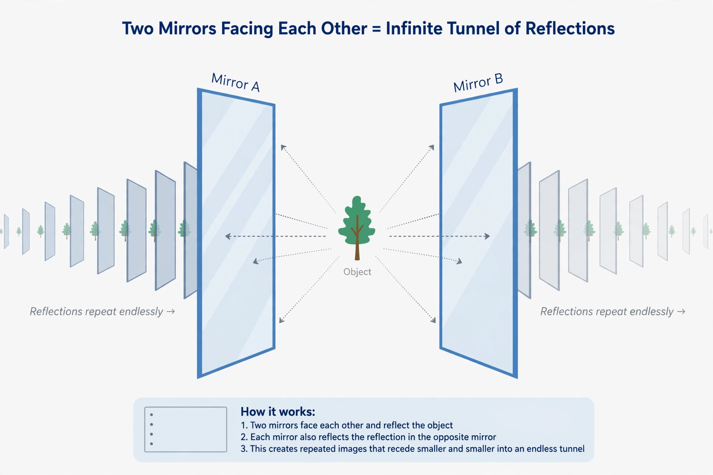

Recursion (mathematics)

[Image: Two facing mirrors producing an endless regress of reflections, illustrating recursion]
In mathematics and computer science, recursion is a method of defining objects or functions in terms of themselves, in a way that bottoms out: a definition gives a base case directly and expresses general cases in terms of simpler ones.
The Fibonacci sequence is defined recursively (each term from the previous two, starting from 0 and 1), and the factorial function is the textbook example: n! = n × (n−1)!, with 0! = 1. Recursive definitions are justified by the principle of induction.
In logic and computing
The primitive recursive and general recursive functions were central to 1930s computability theory — 'recursive' was for a time synonymous with 'computable'. In programming, recursion lets functions call themselves, structuring problems like tree traversal and sorting (quicksort, mergesort) elegantly.
Infinite regress is avoided because each recursive call works on a smaller input, guaranteeing the base case is reached — the computational analogue of the well-ordering of the natural numbers.